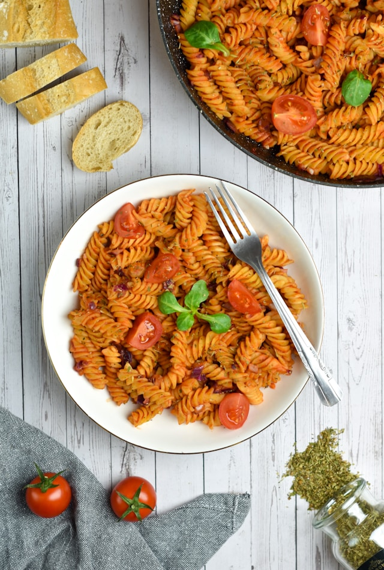

You Will Need
- Large cooking pot
- Sauce pan
- If cooking kielbasa:
- Frying pan
- Spatula
Ingredients
- 1 box or bag store-bought pasta
- 2 14.5 oz jars or equivalent of your favorite pasta sauce
- 1 12 oz bag each of preferred frozen vegetables. Carrots and broccoli work well
- Optional: 1 or more pre-cooked turkey kielbasas, to preference
Directions
- Bring a large pot of water to a steady boil, then the directions for your pasta of choice
- Heat your sauce of choice according to the directions on the jar. 5 minutes of low heat is sufficient for most store-bought sauces. Leave on low heat, stirring occasionally if pasta is still cooking
- Add vegetables to pasta pot, according to the directions on each bag
- Drain pasta and vegetables and place in a large bowl. Add sauce to bowl, stir, and serve
Optional Kielbasa Directions
If you wish to add some meat to the dish, follow these instructions. If you begin heating the skillet when you begin boiling the pasta, they should be ready at roughly the same time.
- Chop kielbasas into desired sizes
- Bring skillet to medium heat.
- Place chopped kilebasas in skillet, frying to a light brown
- Add fried kielbasas to bowl with other ingredients